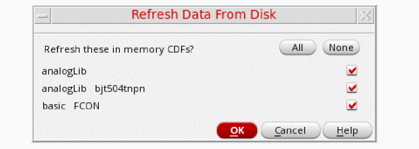

Refreshing the View and Data
-
Choose View – Refresh in the Library Manager window.
By default, all modified libraries appear selected. If a cellview is opened in edit mode, the corresponding entry does not get listed. -
Deselect any libraries that you do not want to update in the view and click OK.
The selected libraries are reloaded from the library definitions.
To refresh design data, technology files, and CDF data in the current session:
-
Select File – Refresh in the Virtuoso Command Interpreter Window (CIW).
If there is no new data to refresh, an appropriate message appears.
Related Topics
Return to top